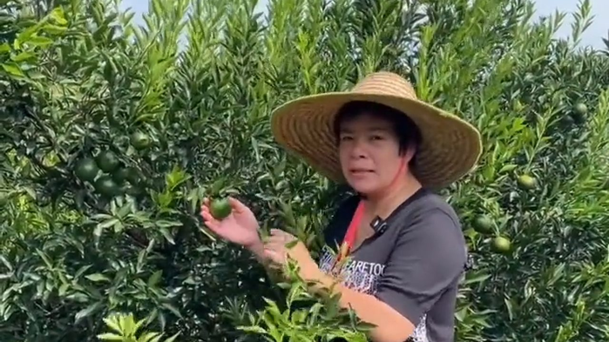
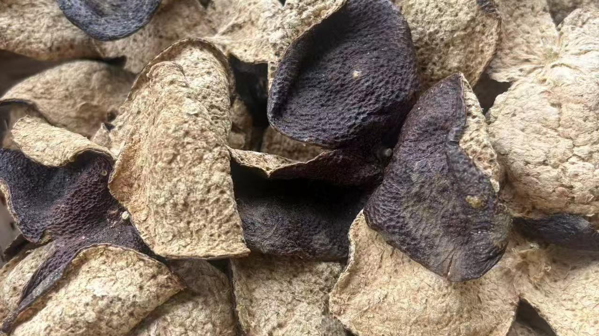
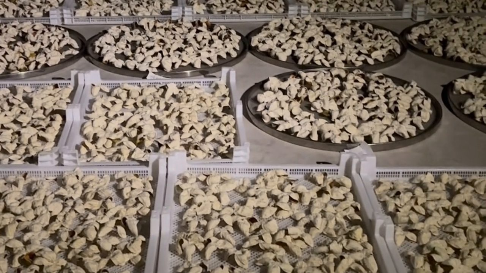
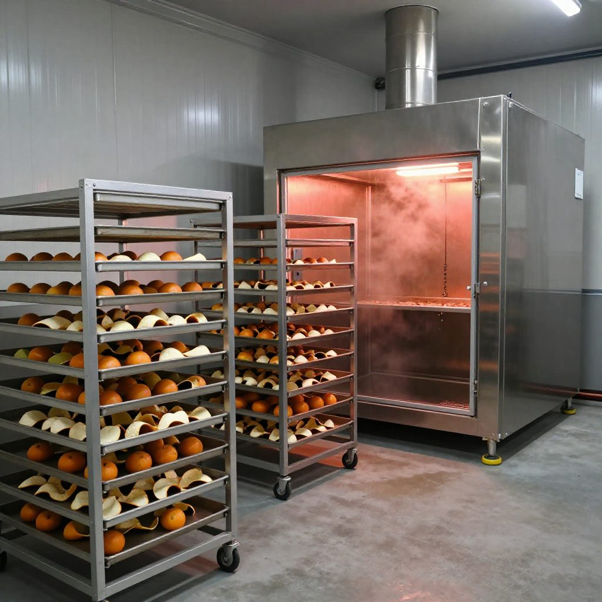
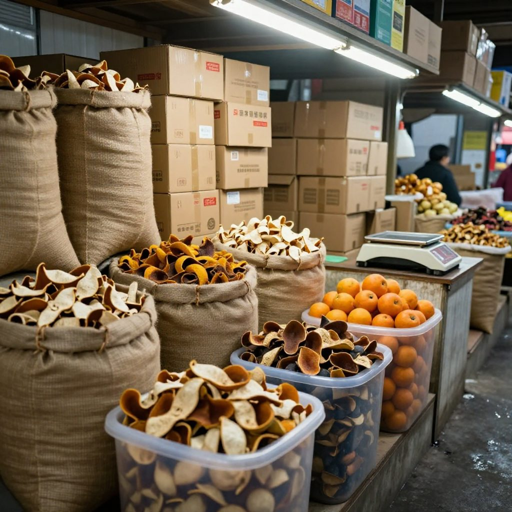
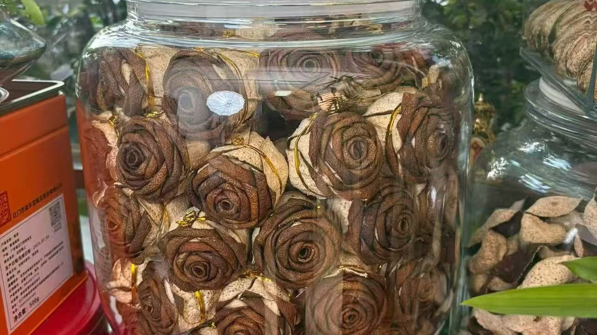

國慶這幾天，新會陳皮村人擠人，店門口那兩張竹椅就沒空過。有位北京來的遊客一進門就問：「姐，新聞天天說鄉村振興、土特產鏈上增值，你們這一片小小的新會陳皮，到底多少人在靠它吃飯？錢都被誰賺走了？」
滢滢姐一邊給客人倒着二紅柑水，一邊笑了：「這話問到根上了。一片皮，從開花到能賣錢，得走五年路，經五個人的手。今天姐就帶你從頭走一遍。」
一、第一站果園：根叔那雙全是口子的手

銀洲湖邊，三江交匯的水汽一大早像霧一樣漫上來。果農根叔已經蹲在地裡掐果子了。他種了二十多年圈枝柑，江門人都認他家的果。他那雙手全是口子，汁水濺到裂口上，疼得直吸氣。
今年小青柑剛過去，二紅柑正當時。根叔跟滢滢姐倒苦水：
「阿滢啊，你話怪唔怪？八月小青柑最高賣到三蚊一斤，但人家要嘅係青頭仔，話藥勁大。我要係貪嗰點高價早早摘晒，後面大紅皮就冇果喇。」
「所以你年年都留幾行等大紅？」
「留。一畝好年景收三四千斤鮮果，地頭價兩三蚊一斤，扣肥料、人工、租地，一年落三四千蚊，仲要睇老天爺賞唔賞面。颱風一來，全白做。」
這就是產業鏈最上游的真實處境：看天吃飯，而且急不得。
二、第二個人：收果的強哥與一句「再不摘就掉價了」

收果的強哥開着皮卡滿新會跑，誰家急着用錢，他就壓價收。去年有個新手果農，被強哥一句話嚇住，青黃不接就全摘了——結果皮薄香弱，曬出來發黑，沒人要。
根叔氣得跺腳：
「柑要足月，皮才有魂！你提前半個月摘，係多賣幾百蚊，但砸嘅係新會嘅招牌！」
滢滢姐最懂根叔的倔。她每年都跟根叔訂那幾行向陽的老樹，寧可貴五毛，也要等到果子轉黃、油胞透亮才開摘。摘下來當天就得開皮——晚一天，果就蔫了，皮就不香了。
三、第二站曬場：三斤多鮮果，才曬得一斤皮

午後兩點，曬場燙得能煎雞蛋。吳小姐戴着草帽，一片一片把果皮翻過來，內囊朝上，像一朵朵小太陽。來參觀的遊客都驚呼好看，可滢滢姐知道，這活最熬人。
「三斤多鮮果，才曬得一斤新皮。鮮果兩蚊半，加埋請人開皮、翻曬、睇天，一斤當年新皮成本就要十五六蚊。仲未計我嘅時間。」
「要是碰上連陰雨呢？」
「整批發霉，一年心血打水漂。隔籬嬸子去年就係，一場秋雨冇蓋及時，三百斤皮全長綠毛，蹲喺曬場邊喊咗半晚。」
四、第三站工廠：最狠的一場衝突

村裡新開了個烘乾廠，梁老闆拍着胸口跟滢滢姐說：
「阿滢，你嗰啲生曬太慢喇。放我度六十五度烘兩日，又紅又香，一個月就當三年賣。」
「梁總，你呢個叫催熟，唔叫陳化！真正嘅新會陳皮，靠嘅係銀洲湖嘅風、三江交匯嘅水汽，一年年陳出嚟。電烘嘅皮，飲落一股火氣，三年五年都唔退。你賺快錢我唔攔你，但唔好掛新會嘅名。」
兩人一拍兩散。梁老闆轉頭就去給外面供貨了——一斤烘出來的皮，便宜五塊錢，多的是人要。
可滢滢姐認死理：皮可以貴，不能假。
五、第四站批發市場，與第五站回到小店

江門批發市場裡，萍姐的檔口最大，嗓門也最大。她跟滢滢姐是老相識，說話直：
「阿滢，你守正宗圈枝、生曬，成本高，一斤三年皮你要賣兩三百。我度摻一半外地皮，一斤先賣一百，遊客仲覺得執到寶。你話我黑心？我租一年十幾萬，唔咁跑量，我點活？」
滢滢姐沒法反駁。一斤皮，從果農手裡十幾塊的成本，到工廠倉儲、翻曬、資金壓倉三年，利息人工一加上，批發價就得翻兩三倍。真正賺錢的，是能沉得住氣、有大倉庫囤得起老皮的人。
一句話說透這行的錢從哪來：一年皮賺的是辛苦錢，三年皮賺的是時間錢，十年皮賺的才是稀缺錢。可這中間，多少人等不到三年就斷了資金鏈，把皮賤賣了。
傍晚，曬場收了皮，遊客散了。滢滢姐坐在門口剝了個二紅柑，果香混着陳香飄滿街。
「你睇，根叔喺地裡熬，強哥喺路上搶，梁老闆喺廠裡催，萍姐喺市場裡卷，我喺呢間店裡守。一片皮，五個人，五種活法。」
「姐，咁你哋到底邊個賺得最多？」
「種果嘅靠天吃飯，收果嘅靠嘴吃飯，開廠嘅靠量吃飯，批發嘅靠快吃飯。我啊，靠良心吃飯——賺得最慢，但睡得最香。」
常見問題
一片新會陳皮從果園到櫃檯，要經過幾個人？通常五個環節：果農、收果商、開皮與曬場、加工（生曬或烘乾）、批發與零售。每一環都吃掉一部分利潤，真正賺大錢的是能壓得起資金、囤得起老皮的人。
為什麼說「柑要足月，皮才有魂」？柑果未足月就摘，皮薄、油室未長足，曬出來發黑、香氣弱。新會柑要等到轉黃、油胞透亮才開摘，皮才有足夠的揮發油與糖分去陳化。
生曬皮和烘乾皮差在哪？生曬靠自然風與陽光，慢但香氣層次完整；烘乾（例如六十五度烘兩天）快、成本低，但喝起來帶「火氣」，香氣扁平，而且不是陳化。
三斤鮮果才出一斤皮，成本怎麼算？鮮果約兩塊半一斤，三斤多鮮果出一斤當年新皮，加上開皮、翻曬、看天的人工，一斤當年新皮成本約十五六塊；再算三年倉儲與資金成本，價格自然翻上去。
批發市場摻外地皮，消費者怎麼分辨？看油室（細小凹點是否清晰）、聞香氣（是否溫潤有層次）、折皮身（是否柔韌不易碎）。最實際的辦法是問產區與年份，並要求可溯源。
一年皮、三年皮、十年皮，賺的分別是什麼錢？一年皮賺辛苦錢，三年皮賺時間錢，十年皮賺稀缺錢。等不到三年就斷資金鏈的，往往只能把皮賤賣給壓價的人。
結語：同一斤皮，放五年見真章

夜風從銀洲湖那邊吹過來，帶着鹹鹹的水汽。「你信不信，同樣一斤皮，我這裡放五年，香得連隔壁街都聞得到；而有些人的皮，放五年，只剩一股霉味？」
這一行的分水嶺，從來不是誰更會賣，而是誰願意等。
想知道三個年份的皮該怎麼泡才不苦，看這篇《秋燥養生茶飲刷屏：新會陳皮三年、五年、十年，各有各的泡法》；想弄清「圈枝」兩個字的水分，翻翻這篇《公路邊攤開一大片：新會陳皮的「圈枝」真相》。
下期預告：這一行的坑，九成外地人都踩過——花高價買到的，根本不是新會皮。滢滢姐教你怎麼一眼看出廣西皮、湖南皮冒充本地皮，還有一個「一刮就掉粉」的鑒別小動作。明晚接着聊，姐泡好茶等你。